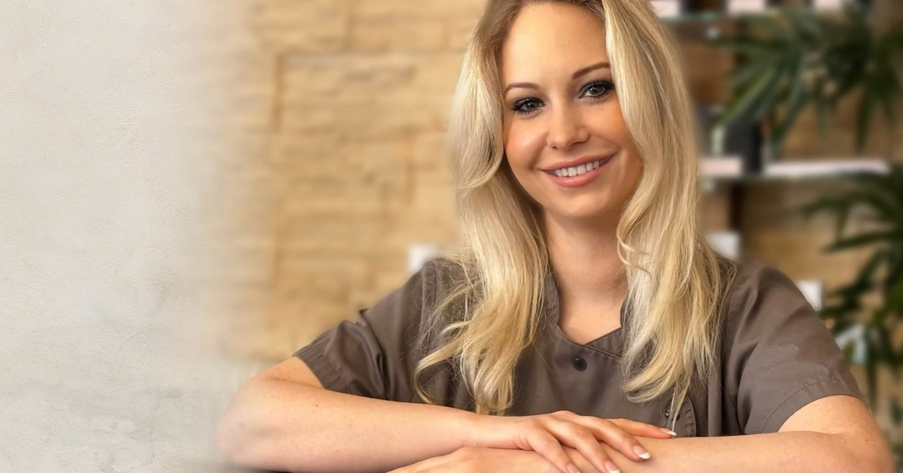

Sabrina Herosé
Inhaberin | Kosmetikmeisterin | Pharmazeutisch-technische Assistentin (PTA) | Buchautorin
Seit 2003 bin ich selbstständig in der Beauty-Branche tätig. Meine Ausbildung absolvierte ich in der Schweiz, anschließend folgten zahlreiche nationale und internationale Weiterbildungen. Seit 2016 habe ich mich auf Medical Beauty und anspruchsvolle ästhetische Hautkonzepte spezialisiert.
Mein Anspruch ist es, jeden Kunden ganzheitlich zu begleiten und ausschließlich mit den innovativsten Technologien und Wirkstoffkonzepten der High-End-Kosmetik und Premium Medical Beauty zu arbeiten. In meinem Institut kommen ausschließlich international führende Marken, wissenschaftlich fundierte Behandlungskonzepte und modernste Technologien die auch in führenden Kliniken stehen zum Einsatz.
Zu meinen Schwerpunkten gehören innovative regenerative Wirkstofftechnologien wie PDRN, Lachssperma; Exosome und Longevity-Konzepte, die individuell auf die Bedürfnisse der Haut abgestimmt werden. Dank meiner langjährigen Erfahrung und Spezialisierung ist kaum ein Hautbild oder Hautproblem, das mir nicht vertraut ist.
Mein Fachwissen gebe ich als Autorin von Fachbüchern sowie in Fachschulungen und Weiterbildungen für Kosmetikerinnen zu Themen wie Akne, Rosacea, Hautalterung und Neurodermitis uvm… weiter. Gleichzeitig bilde ich mich kontinuierlich auf nationaler und internationaler Ebene fort, um meinen Kunden jederzeit Zugang zu den neuesten Entwicklungen der Premium Medical Beauty zu bieten.
Exklusivität, höchste Qualität und sichtbare Ergebnisse bilden die Grundlage meiner Arbeit – für Kunden, die höchste Ansprüche an ihre Haut und ihre Behandlung stellen.